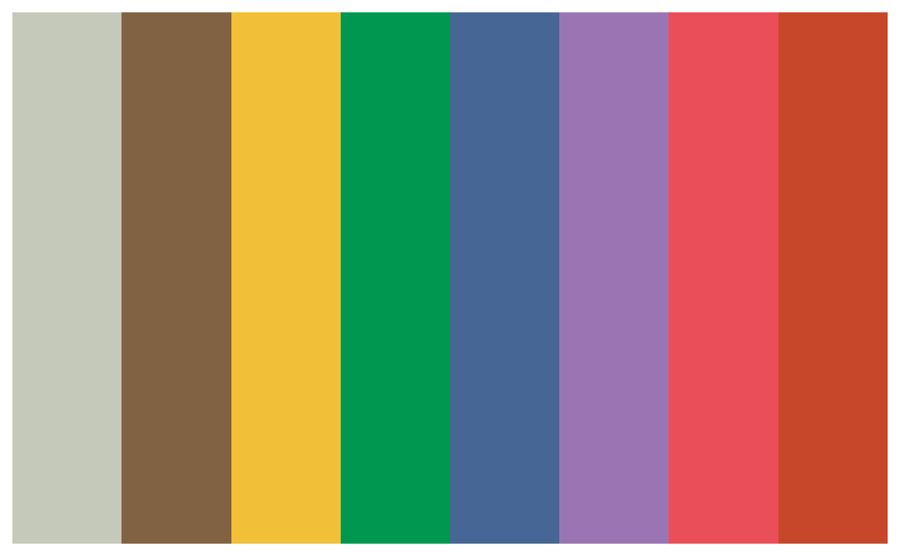
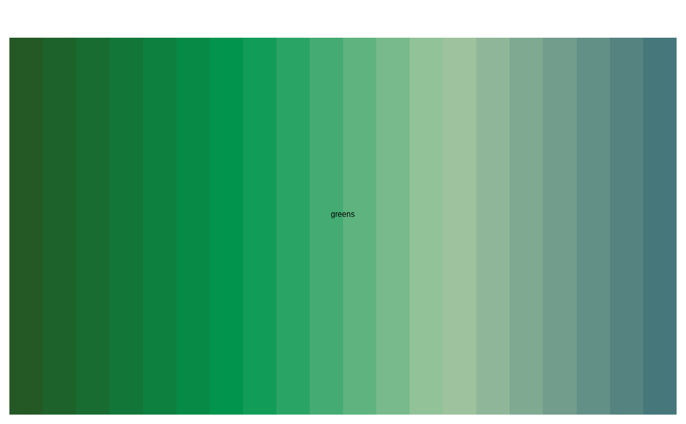
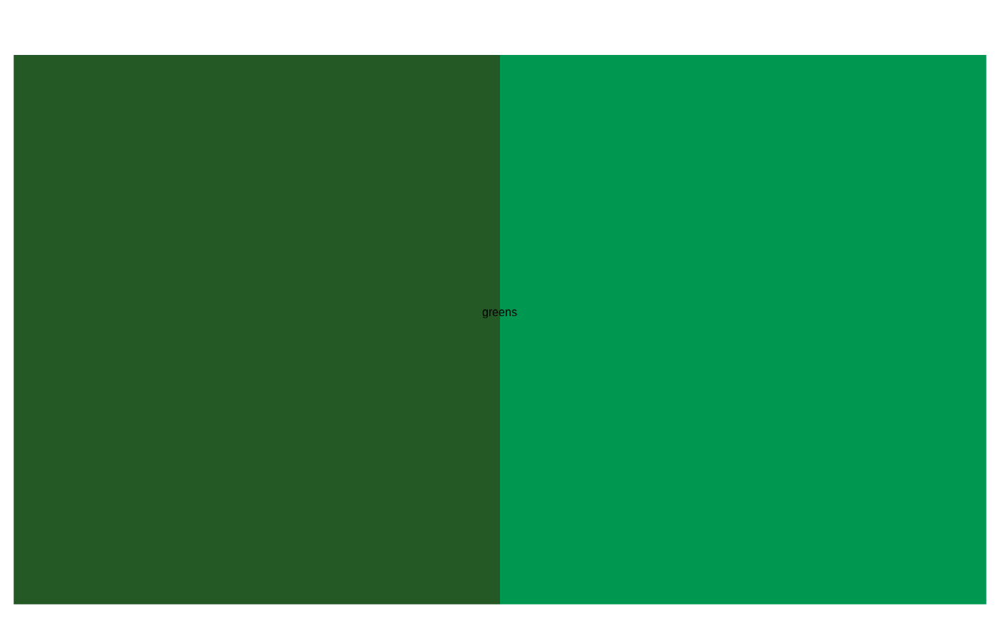

Construction of the package is inspired by the ghibli
package.
Usage
benvi_palette(pal_name, n, direction = 1, type = c("discrete", "continuous"))
Arguments
- pal_name
Name of the palette.
- n
Number of colors desired. Sets have 4 colors, Qual have 8 colors.
- direction
Either 1 or -1. If -1 the palette will be reversed.
- type
Either "continuous" or "discrete". Continuous automatically
interpolates between the colors.
Value
A vector of characters with color attribute
Examples
benvi_palette("greens")

benvi_palette("greens", n = 20, type = "continuous")

benvi_palette("greens", n = 2, type = "discrete")
